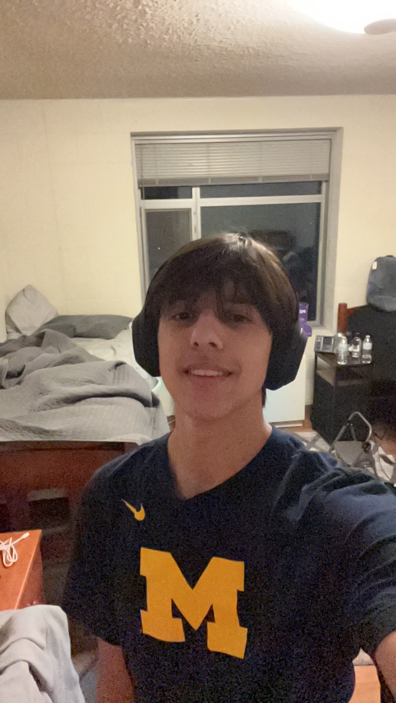

Aidan David Ayala is from Plymouth, Michigan , born in 2005. Growing up in a supportive family with his parents and brother, he developed a strong bond with his sibling, spending much of his childhood together.
Aidan was an active kid, with a passion for sports, particularly baseball, which he pursued alongside his interest in basketball. He also explored music, playing both the violin and saxophone, though he eventually
focused more on sports as he got older. Aidan attended a larger high school holding over 6000 people. It was not only one high school, but three different schools combined of which Aidan's home school was Canton High.
After attending Canton High School , Aidan discovered a keen interest in technology, sparked by a cybersecurity class that guided him toward pursuing a career in the tech field.
Aidan is currently a student at Penn State Berks and plans to transfer to the University Park campus in the near future to further his education in technology.
While he is still building his career, Aidan works at Geek Squad
at Best Buy, where he provides tech support and continues to work on small programming projects. He is passionate about staying active, learning about his field of study, and balancing his academic and personal life.
Outside of work and school, Aidan enjoys playing basketball, video games, and spending quality time with friends and his girlfriend, Nethra. As he looks forward, Aidan is eager to develop his skills and face the
challenges ahead in both his personal and professional journey.
| Aidan Ayala | |||||||
|---|---|---|---|---|---|---|---|
|  | |||||||
| Ayala in 2023 | |||||||
| Born | September 6th 2005(age 19) Plymouth, Michigan , US |
||||||
| Alma Mater | Penn State | ||||||
| Occupations | Best Buy Geek Squad | ||||||
| Years Active | 2023-present | ||||||
| Dating | Nethra Swamy | ||||||
| Awards | N/A | ||||||
Early Life
Aidan was born in 2005 in Plymouth, Michigan , to a supportive family with his parents and brother. Growing up, Aidan was an active child, with a strong passion for sports, especially baseball, which became a central part of his childhood. Alongside sports, he also developed an interest in music, playing the violin and saxophone, though he later focused more on baseball and basketball. Aidan and his brother were very close, spending much of their time together, which strengthened their bond and shaped Aidan’s sense of family. His parents encouraged him to pursue whatever he felt passionate towards at the time. This lead to Aidan taking part in a lot of different sports programs some of which included basketball, baseball, as well as soccer. However, one sport that really caught Aidan's attention was baseball. He constantly watched the Detroit Tigers with his grandpa and would often love to talk baseball. This is what would later lead to his obsession with baseball which lasted all the way until he departed for college. Another significant part of his life was video games. Although early on Aidan did not play too many by the time he was in middle school the Wii already had become very familiar to him. As he grew older into his teenage years he bought a ps4 and later his very first PC which played a big part in what lead him to his career.
Career and Education
Aidan is an aspiring cybersecurity professional currently studying at Penn State Berks, with plans to further his education at Penn State’s main campus next year. Aidan’s journey into the world of technology and cybersecurity began at a young age, driven by an early fascination with computers and problem-solving. This passion for technology has been the cornerstone of his academic and career pursuits. Growing up, Aidan excelled in subjects related to math and technology. During high school, he was not only a dedicated student but also an active participant in extracurricular activities, including baseball and HOSA (Health Occupations Students of America). These experiences helped Aidan develop crucial life skills, such as teamwork, leadership, and the ability to balance multiple responsibilities effectively. It was also during high school that Aidan discovered a deep interest in the tech world, particularly through his involvement in the SITS (Student Information Technology Services) program. As a main contributor to the program, Aidan worked alongside peers to refurbish and distribute computers to those in need, gaining hands-on experience in computer repair and technology troubleshooting. This experience sparked a desire to pursue a career where he could combine his problem-solving skills with his love of technology. After graduating from high school, Aidan enrolled at Penn State Berks, where he chose to major in Cybersecurity a field that blends his technical abilities with the ever-growing demand for online safety and data protection. At Berks, Aidan has built a strong foundation in his chosen field, focusing on both the theoretical and practical aspects of cybersecurity. The transition to Penn State’s main campus next year will allow him to expand his knowledge and skills even further, with a goal of becoming a leading professional in the cybersecurity industry. In addition to his studies, Aidan has gained valuable work experience through his position at Best Buy as a member of the Geek Squad. This role has allowed him to apply his technical skills in a real-world environment, assisting customers with a variety of tech-related issues. Whether diagnosing problems with computers, repairing devices, or providing customer support, Aidan enjoys the hands-on nature of the job and the opportunity to directly impact others by solving their tech issues. The job has reinforced his passion for technology and further solidified his career aspirations in the field of cybersecurity. Before joining Best Buy, Aidan worked as a busboy at an Italian restaurant an experience that, while not directly related to his current career, played a pivotal role in shaping his work ethic and personal growth. The job taught him the value of hard work, attention to detail, and providing excellent service, all of which continue to serve him well in his current role and in his professional life. Looking to the future, Aidan is excited about the opportunities that lie ahead in the field of cybersecurity. With a strong academic background, a growing body of hands-on experience, and a deep passion for technology, he is eager to continue advancing in his education and career. As he prepares for his transition to Penn State Main, Aidan remains committed to building a successful career that blends his love for technology with the desire to make the online world a safer place.